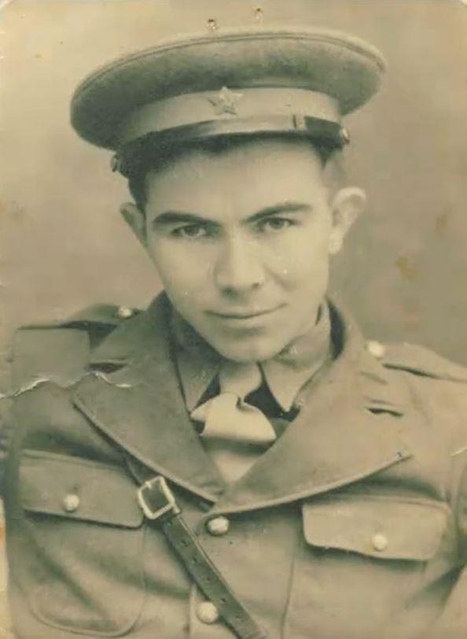
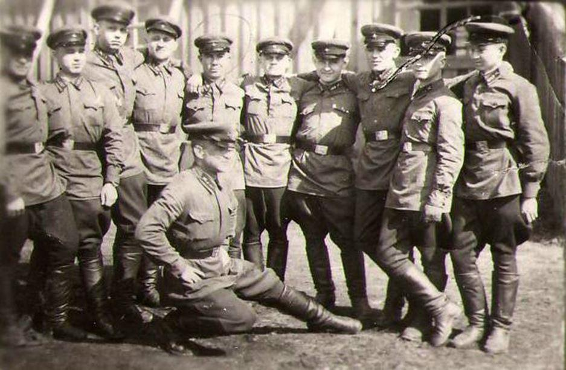
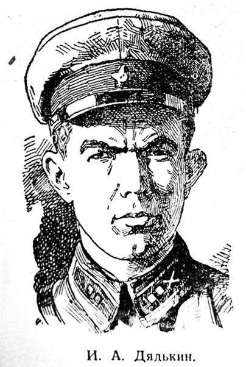
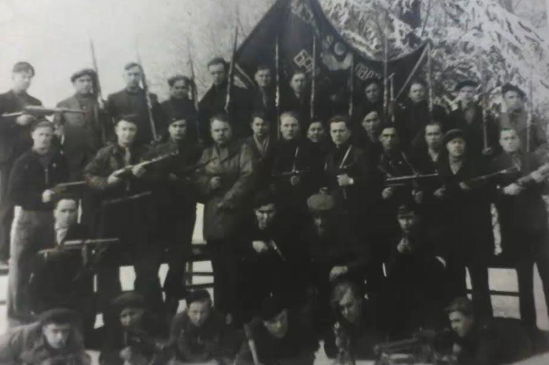
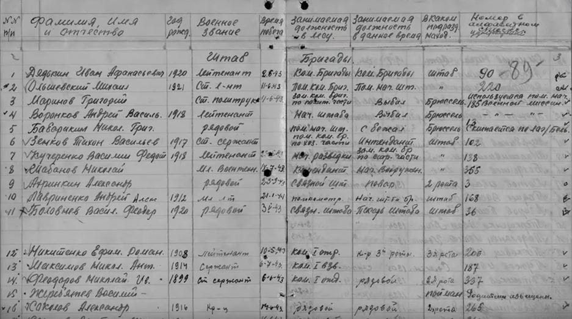
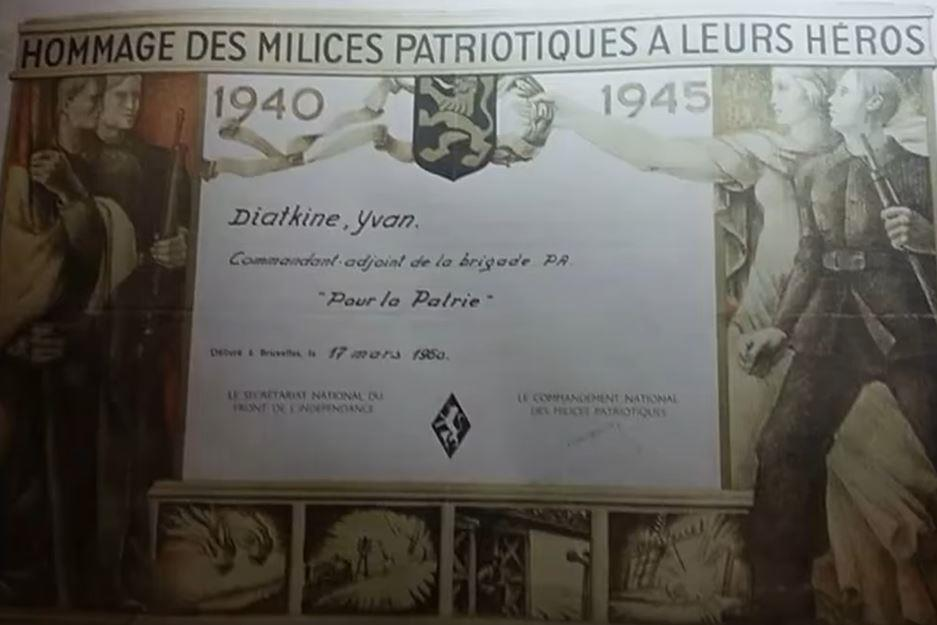
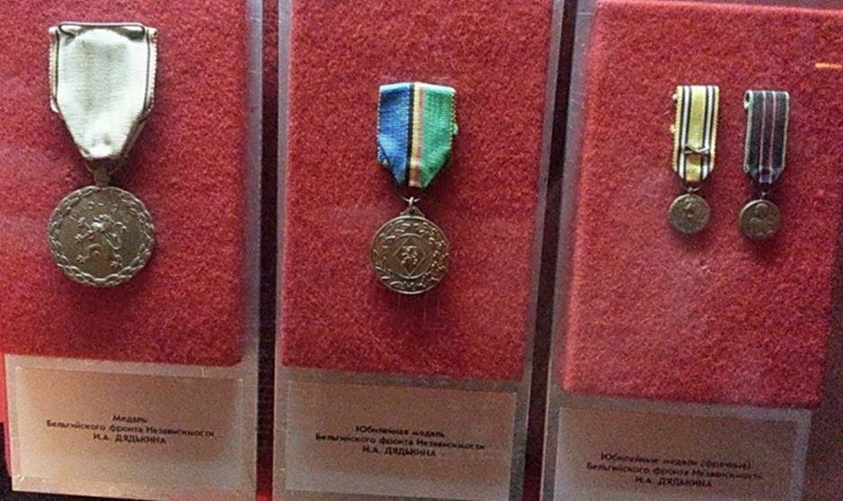
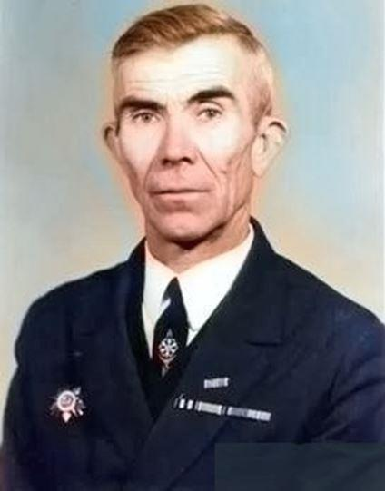

« Les lâches peuvent déclencher une guerre, il faut combattre ses dangers avec courage » (Publius Cornelius Tacite)
Ivan Afanasyevich Dyadkin , dans le milieu des partisans, est connu sous le pseudonyme de Jan Bos. Son parcours militaire fait partie des nombreuses dossierspoussiéreux des archives militaires ;c'est ce qui lui donne de l’importante. Si les descendants des combattants connaissent et se souviennent du sort de chaque héros, du front occidental et oriental, si aucune page de cette guerre tragique n'est tombée dans l’oubli, l'Humanité pourrait ne plus répéter les terribles erreurs du passé.
Ivan est né le 1er juillet 1920 dans la région de Stalingrad, au village de Krasnoselets.
Après l'école, il a reçu suivi une formation en zootechnie à la suite de quoi il s’engage à l’armée. En 1938, il entre à l'école d'artillerie de Moscou, qu'il termine en 1940 avec le grade de lieutenant. Il a commencé la guerre en tant que commandant du 311e peloton de reconnaissancedu régiment d'artillerie de l'arméede la 10e région militaire spéciale occidentale.

Ivan Afanasyevich Dyadkin dans la région de Volgograd
En juin-juillet 1941, Dyadkina participé aux hostilités à la frontière avec la Biélorussie. Ce furent des combats très durs. Et bien que la tâche stratégique de la 1ère division de Moscou ait finalement été accomplie, beaucoup de nos combattants ont été blessés, tués et capturés. C'est le cas d’Ivan, qui, après avoir été blessé et avoir longtemps erré dans les marais, a été capturé par les Allemands. Dès ce moment commence son difficile parcours de prisonnier, avant de devenir un des partisans soviétiques les plus importants du territoire belge.
Le voyage d'Ivan en Belgique a été particulièrement pénible. Il a été interné dans plusieurs camps de concentration, a souffert du typhus et a été pris dans une tentative d'évasion avortée.
À l'automne de 1942, Dyadkina travaillé dans la mine Schwarzberg. Le travail y était difficile et dangereux, mais, comme le partisan l'a dit lui-même, les conditions de détention étaient un peu plus supportables que dans d'autres camps. C'est ce qui lui a permis, ainsi qu’au sergent Tikhon Zenkov, de s'échapper le 2 juin 1943. Après cela, Ivan et son camarade ont erré en Belgique, établissant des contacts avec les habitants et les combattants de la Résistance. À cette époque, Ivan a commencé à rassembler des volontaires soviétiques qui ont également réussi à échapper à la captivité. À la fin de 1943, Dyadkin a pu rassembler un détachement composé de plus de quatre-vingt personnes. Les habitants lui ont donné le surnom de Jan Bos, ce qui signifiait – Jean-la Forêt en néerlandais.
Après l'organisation du détachement de partisans, ils ont commencé à mener une activité subversive à l'arrière de l'ennemi : nouvelles évasions de camps concentration, obtenu d’armes, sabotages. Le commandement allemand a alors attribué une récompense pour la tête de l'insaisissable Jan Bos : cent mille francs belges, une fortune à cette époque! Plus tard, au printemps de 1944, le détachement de Dyadkina fusionner avec d'autres groupes de partisans soviétiques opérant en Belgique. Ils ont organisé une brigade de guérilla unie « Pour la Patrie! », que Konstantin Shukshin , avec Ivan Dyadkin , commanda jusqu'à la Libération.
Personne ne parle mieux des exploits de ces hommes courageux que Jan Bos lui-même. Voici un extrait de son rapport: « 841 Allemands ont été mis hors de combat, ainsi que 53 hommes de la Gestapo, 24 véhicules ont été détruits, cinq lignes de chemin de fer ont été sabotées, six convois militaires ont été détruits, ainsi que huit huit entrepôts allemands remplis. En outre, 25 pilotes des troupes anglo-américaines, ont été récupérés après que leur avion se soit abîmé.
Nos partisans étaient été très appréciés par les camarades belges. Ils ont dit que les Russes faisaient le travail le plus difficile, ils pouvaient toujours compter sur eux ».
Ivan Dyadkina déposé les armes le 29 avril 1945, lorsque tous les membres de la brigade ont été envoyés dans leur pays natal par l'intermédiaire du consulat soviétique en Belgique. Avec des documents prouvant leur participation à la résistance, des armes et leur drapeau.
Heureusement, Ivan a échappé au sort difficile de nombreux anciens prisonniers rentrés au pays. Après vérification par les autorités soviétiques, il a été relâché et s'est installé dans le village de Sukhodol, dans le district de Sredneakhtubinsk. Il y a longtemps travaillé comme directeur de kolkhoze et a même été accepté dans les rangs du Parti communiste d’Union Soviétique. C'était une grande chance, car dans ces années-là, l'État acceptait à contrecœur les anciens prisonniers de guerre au Parti. Les habitants du village se souvenaient d'Ivan comme un homme sensible, gentil et juste.
Dyadkin a reçu plusieurs médailles et distinctions honorifiques. Après la guerre, il a reçu la médaille du gouvernement belge « Membre du mouvement de Résistance » ; en 1965, lors de sa visite en Belgique, il a reçu une autre médaille.
Dans les endroits où il a combattu, il a été reçu très chaleureusement. Ivan a visité les villes traversées par sa brigade, a rencontré des Belges qui se souvenaient des exploits des partisans soviétiques qui se battaient pour ce pays et son peuple. Les camarades de combat étaient heureux de voir un vieil ami, Jan Bos, avec qui ils ont traversé de nombreuses épreuves.
En 1985, la Patrie a reconnu les mérites du partisanhéroïque et l'a honoré de l'Ordre de la Grande Guerre patriotique du second degré. Ivan Afanasyevich Dyadkin est décédé en 1996.
G.M.N.
SOURCES
1. Article d'Anton Borisov « ; un partisan de Stalingrad au cœur de l'Europe »!
2. Article de Sergei Novitsky « Dubovchanin a combattu pour la Patrie en Belgique »!
Partager cette page